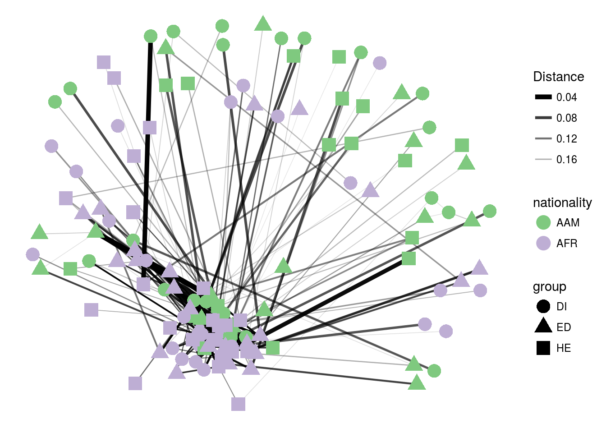
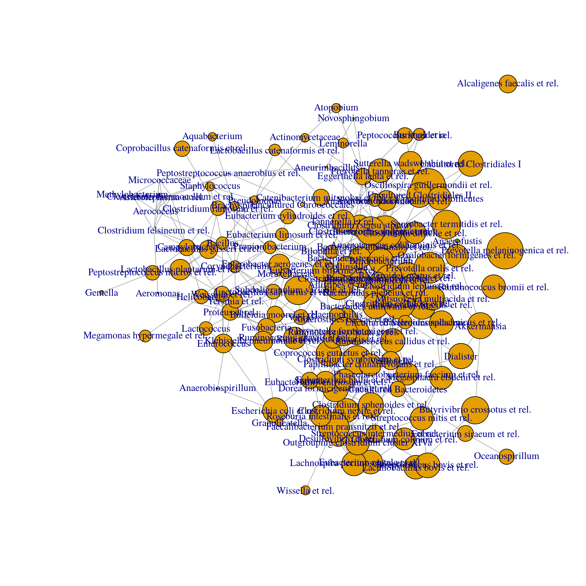
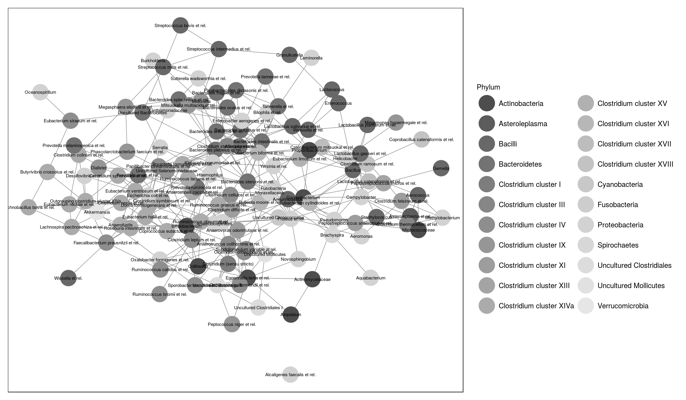

See also the phyloseq tutorial
Load example data:
library(microbiome)
data(dietswap)
pseq <- dietswapNetwork with phyloseq tools:
theme_set(theme_bw(20))
p <- plot_net(pseq, maxdist = 0.2,
shape = "group", color = "nationality",
distance = "bray", laymeth = "auto") +
scale_colour_brewer(palette = "Accent")
print(p) 
The widely reported compositionality bias in similarity measures can be fixed with SpiecEasi or SparCC; the implementations are available via the SpiecEasi package. Note that the execution is slow.
library(SpiecEasi) #install_github("zdk123/SpiecEasi")
library(phyloseq)
# Pick the OTU table
otu <- t(abundances(pseq))
# SPIEC-EASI network reconstruction
# In practice, use more repetitions
net <- spiec.easi(otu, method='mb', lambda.min.ratio=1e-2,
nlambda=20, icov.select.params=list(rep.num=20))
## Create graph object
n <- net$refit
colnames(n) <- rownames(n) <- colnames(otu)
# Network format
library(network)
netw <- network(as.matrix(n), directed = FALSE)
# igraph format
library(igraph)
ig <- graph.adjacency(n, mode='undirected', add.rownames = TRUE)
# Network layout
coord <- layout.fruchterman.reingold(ig)
## set size of vertex to log2 mean abundance
vsize <- log2(apply(otu, 2, mean))
# Visualize the network
print(plot(ig, layout = coord, vertex.size = vsize, vertex.label = names(vsize)))
## NULLInvestigate degree distribution with the following:
dd <- degree.distribution(ig)
plot(0:(length(dd)-1), dd, ylim=c(0,.35), type='b',
ylab="Frequency", xlab="Degree", main="Degree Distributions")Visualize the network with ggnet2:
library(GGally)
library(ggnet)
library(network)
library(sna)
library(ggplot2)
library(intergraph) # ggnet2 works also with igraph with this
phyla <- map_levels(colnames(otu), from = "Genus", to = "Phylum",
tax_table(pseq))
netw %v% "Phylum" <- phyla
p <- ggnet2(netw, color = "Phylum", label = TRUE, label.size = 2)
print(p)